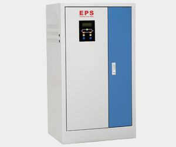

新闻中心
- 公司新闻
- 行业新闻
- 企业文化
EPS应急电源检测步骤分为哪几步？
浏览次数：211
发布时间：2014-03-08
为了确保EPS应急电源更好的应用到消防应急系统，在使用前或者使用过程中，需要对EPS应急电源进行检测与测试。以
下为EPS应急电源其检测步骤，在操作时最好由具备相关专业知识的人员操作，以免发生错误与故障：

- 首先，分别使EPS应急电源处于主电和备电工作状态，检查其主电电压、电池电压、输出电压和输出电流的显示情况及 指示灯颜色。
- 以自动、手动两种方式使EPS应急电源转入电池工作状态，检查应急电源的主电和备电输出情况。
- 启动强制应急启动按钮，使消防应急灯具转入应急状态，并直至放电终止，检查应急电源的过放电护情况和故障情况。
- 分别使集中电源型消防应急灯具的任一供电支路开路和短路，再使另一支路的消防应急灯具分别处于主电状态和应急 状态，检查消防应急灯具的工作情况。
- 分别使集中电源型消防应急灯具的应急电源处于空载、满载10%、满载和超载20%状态，检查应急电源的工作情况。
- 检查电池（组）的额定电压及分段保护情况，然后，在电池（组）充满电的条件下分别测量每段电池（组）的电压。
- 分别使EPS应急电源的充电器与电池间连接线开路、短路，检查其故障情况。
- 分别使EPS应急电源的输出主线路和支路连接线开路、短路，检查其故障情况。
- 分别使EPS应急电源的应急控制回路开路、短路，检查其故障情况。
上一页
下一页
返回列表